เส้นทางช่วงเริ่มต้น: จากคุยกับบริษัทถึงเริ่มงานวันเปิดภาค
แผนภาพทีละจังหวะว่าต้องทำอะไร ส่งอะไร ภายในเมื่อไร และใครเป็นคนทำ เลือกได้ว่าบริษัทตกลงรับแล้ว หรือยังต้องใช้หนังสือแนะนำไปสมัครก่อน
ฉบับ 1.0 · 12 พฤศจิกายน 2569 · ภาพหน้าจอทุกภาพใช้ข้อมูลสมมติ (นายสมมติ ใจดี · บริษัท ตัวอย่างซอฟต์ จำกัด)
1. เลือกสถานการณ์ของคุณ
ขั้นตอนต่างกันเล็กน้อยตามว่าบริษัทตกลงรับแล้วหรือยัง เลือกข้อที่ตรงกับคุณ แผนภาพและขั้นตอนด้านล่างจะเปลี่ยนตาม
2. ภาพรวมทั้งเส้นทาง
- คุยกับบริษัทให้ได้ข้อมูลครบ
- เข้าระบบ SE-WIL
- กรอกข้อมูล แล้วกด "ส่งให้หลักสูตรตรวจ"ภายใน 13 พ.ย. 69
- อาจารย์ตรวจข้อมูลและบริษัท
- พิมพ์ SE-WIL00 ฉบับมีข้อมูล
- หัวหน้าหลักสูตรและบริษัทลงนาม
- แนบไฟล์ที่ลงนามในระบบภายใน 16 พ.ย. 69
- หลักสูตรอนุมัติ ระบบส่งข้อตกลง SE-WIL01
- ลงนามข้อตกลง SE-WIL01 ทุกฝ่ายภายใน 16 พ.ย. 69
- หลักสูตรบันทึกว่ายืนยันแล้ว
- เปิดภาค รายงานตัว เริ่ม logbook18 พ.ย. 69
- พิมพ์ SE-WIL00 ฉบับเปล่าที่มีชื่อคุณ
- หัวหน้าหลักสูตรลงนามหน้า 1
- นำไปสมัครหรือสัมภาษณ์
- บริษัทรับ กรอกหน้า 2 และลงนาม
- สแกนหรือถ่ายรูปฉบับที่ลงนาม
- กรอกข้อมูล แนบไฟล์ แล้วกด "ส่งให้หลักสูตรตรวจ"ภายใน 13 พ.ย. 69
- อาจารย์ตรวจข้อมูลและบริษัท
- หลักสูตรอนุมัติ ระบบส่งข้อตกลง SE-WIL01
- ลงนามข้อตกลง SE-WIL01 ทุกฝ่ายภายใน 16 พ.ย. 69
- หลักสูตรบันทึกว่ายืนยันแล้ว
- เปิดภาค รายงานตัว เริ่ม logbook18 พ.ย. 69
สถานะที่คุณจะเห็นในระบบ
ถ้าข้อมูลต้องแก้ อาจารย์จะส่งกลับ สถานะเป็น ส่งกลับให้แก้ไข แก้แล้วกดส่งอีกครั้ง สถานะจะกลับไปที่ รอหลักสูตรตรวจ
ตกลงกับบริษัท แล้วส่งข้อมูลในระบบ
- 1
คุยกับบริษัทแบบไม่เป็นทางการ ให้รู้โจทย์และข้อมูลที่ต้องใช้
คุยกับผู้ที่จะดูแลคุณที่บริษัท (ผู้นิเทศงาน) ให้ได้ข้อมูลครบก่อนเข้าระบบ เพราะแบบฟอร์มบังคับกรอกข้อมูลเหล่านี้
- ชื่อ-นามสกุล ตำแหน่ง และ อีเมลที่ใช้งานจริง ของผู้นิเทศงาน (ระบบจะส่งข้อตกลงไปที่อีเมลนี้) แจ้งท่านก่อนว่าจะกรอกข้อมูลของท่าน
- ชื่อตำแหน่งงานและลักษณะงานที่จะได้รับมอบหมาย (ENGSE305)
- โจทย์ปัญหาสำหรับโครงงาน 1–2 หัวข้อ (ENGSE304)
- รูปแบบและเวลาทำงาน ความเป็นเจ้าของผลงาน และค่าตอบแทน (ถ้ามี)
- ส่งอะไร
- ยังไม่ต้องส่ง เตรียมข้อมูลไว้กรอก
- รายการเต็ม
- เตรียมข้อมูลก่อนเข้าระบบ
- 2
เข้าระบบ SE-WIL ด้วยอีเมลมหาวิทยาลัย
เปิด rmutl.link/sewil ใส่อีเมล @live.rmutl.ac.th แล้วกด "ส่งลิงก์เข้าระบบ" เปิดอีเมลแล้วกดลิงก์ ลิงก์ใช้ได้ครั้งเดียวภายใน 30 นาที
เข้าระบบแล้ว กล่อง สิ่งที่ต้องทำ บนสุดจะบอกเสมอว่าตอนนี้ต้องทำอะไรต่อ
ไม่ได้รับอีเมลเข้าระบบ
รอ 1–2 นาที แล้วดูโฟลเดอร์ Junk หรือ Quarantine ของ Outlook ถ้ายังไม่มี อ่านวิธีแก้ปัญหาเข้าระบบ หรือแจ้งผู้ประสานงาน
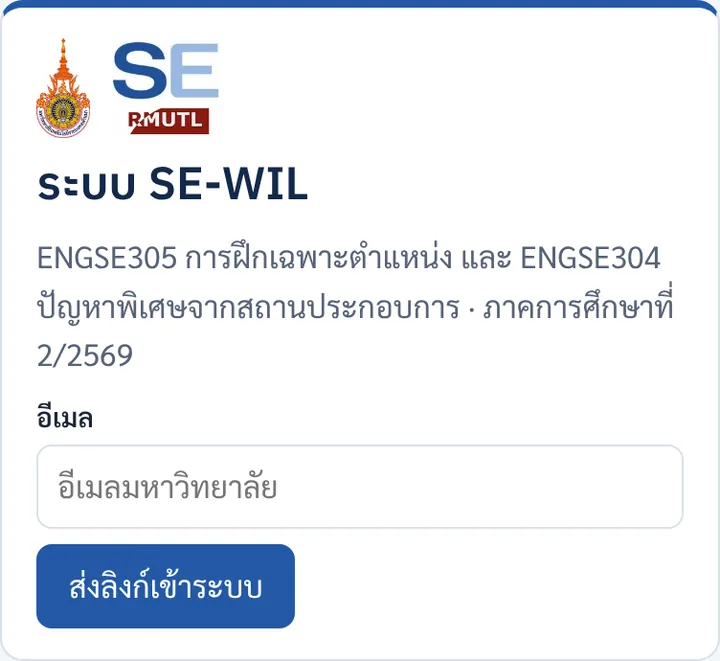
หน้าเข้าระบบ 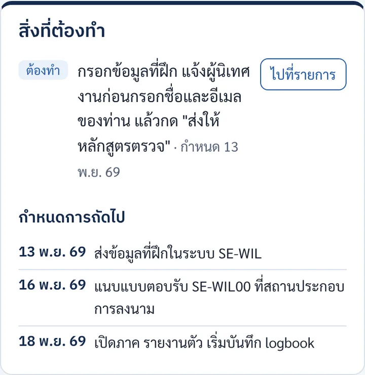
กล่องสิ่งที่ต้องทำหลังเข้าระบบครั้งแรก - 3
กรอกข้อมูลที่ฝึก กด "บันทึกร่าง" แล้วกด "ส่งให้หลักสูตรตรวจ"
กรอกทีละส่วน (ก.–ช.) ตามข้อมูลที่ได้จากขั้นที่ 1 กด บันทึกร่าง ได้ทุกเมื่อ เมื่อครบแล้วติ๊กยินยอมท้ายฟอร์ม แล้วกด ส่งให้หลักสูตรตรวจ และ ยืนยันส่ง
ขั้นนี้ยังไม่ต้องแนบไฟล์แบบตอบรับ ส่งข้อมูลให้อาจารย์ดูก่อน
- ส่งอะไร
- ข้อมูลที่ฝึกในระบบ SE-WIL
- ภายใน
- วันศุกร์ที่ 13 พฤศจิกายน 2569
- วิธีกรอกทีละช่อง
- คู่มือเริ่มที่นี่
หลังทำขั้นนี้ สถานะเป็น รอหลักสูตรตรวจ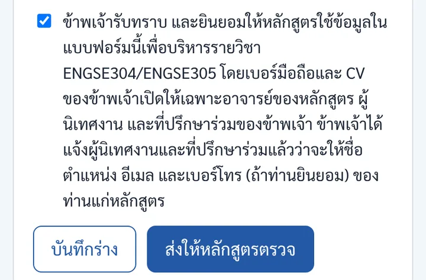
ท้ายฟอร์ม: ติ๊กยินยอม แล้วกด "ส่งให้หลักสูตรตรวจ" 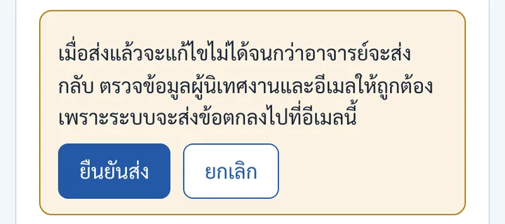
ตรวจอีเมลผู้นิเทศงานอีกครั้ง แล้วกด "ยืนยันส่ง" - 4
อาจารย์อ่านข้อมูลและตรวจสอบบริษัท
อาจารย์อ่านหัวข้องาน รายละเอียด และตรวจสอบบริษัทคร่าว ๆ ระหว่างนี้คุณไม่ต้องทำอะไร ถ้าข้อมูลถูกต้อง ทำขั้นที่ 5 ต่อได้เลย
อาจารย์ส่งกลับให้แก้ไข
คุณจะได้อีเมลแจ้ง และสถานะเป็น ส่งกลับให้แก้ไข พร้อมเหตุผล แก้ตามที่อาจารย์บอก แล้วกด "ส่งให้หลักสูตรตรวจ" อีกครั้ง
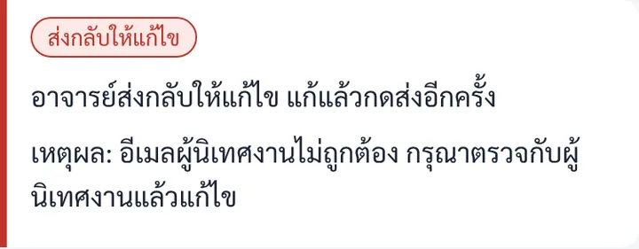
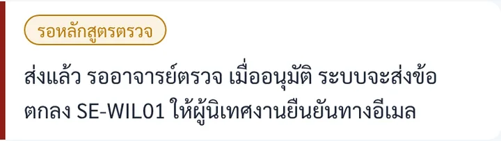
สถานะระหว่างรออาจารย์ตรวจ
หนังสือแนะนำและแบบตอบรับ SE-WIL00
- 5
พิมพ์ SE-WIL00 ฉบับที่มีข้อมูลของคุณ
ในระบบ แท็บ ข้อมูลที่ฝึกและข้อตกลง กดปุ่ม เตรียมฉบับมีข้อมูลของฉัน แล้วกด เปิดแล้วกดพิมพ์ หน้าแบบฟอร์มจะเติมข้อมูลที่คุณกรอกไว้ให้ทั้ง 2 หน้า กด "พิมพ์ / บันทึกเป็น PDF" ได้กระดาษ A4 สองแผ่น
- หน้า 1 หนังสือแนะนำรายวิชา ให้หัวหน้าหลักสูตรลงนาม
- หน้า 2 แบบตอบรับ ให้บริษัทตรวจข้อมูลและลงนาม
ทุกคนต้องมีเอกสารนี้ แม้ฝึกที่เดิมจาก ENGSE301
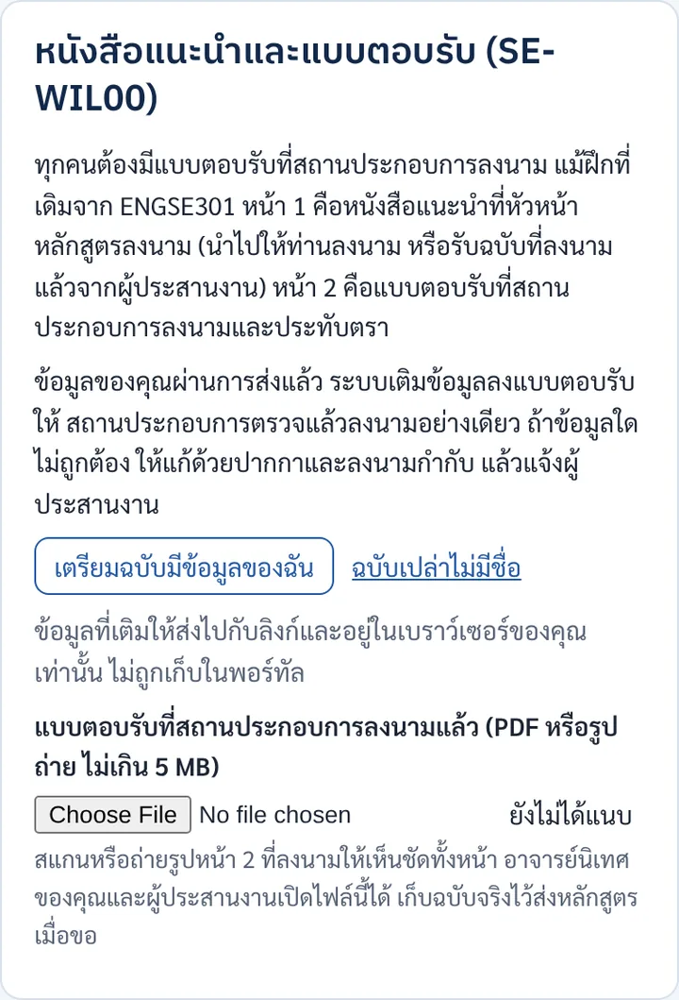
ปุ่ม "เตรียมฉบับมีข้อมูลของฉัน" 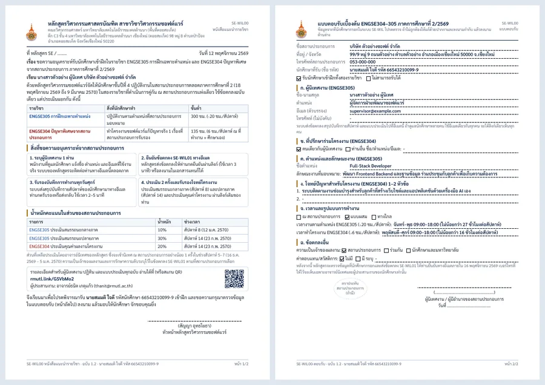
ได้เอกสาร 2 หน้า A4 (หน้า 1 หนังสือแนะนำ · หน้า 2 แบบตอบรับ) - 6
ให้หัวหน้าหลักสูตรลงนามหน้า 1 และบริษัทลงนามหน้า 2
- หน้า 1: นำไปให้หัวหน้าหลักสูตรลงนาม หรือรับฉบับที่ลงนามแล้วจากผู้ประสานงาน ลงนามบนกระดาษหรือลงนามใน PDF ก็ได้
- หน้า 2: ให้ผู้นิเทศงานหรือผู้มีอำนาจของบริษัทตรวจข้อมูล ลงนาม และประทับตรา (ถ้ามี) ถ้าข้อมูลใดไม่ถูกต้อง ให้แก้ด้วยปากกาและลงนามกำกับ แล้วแจ้งผู้ประสานงาน
ส่งเป็น PDF ทางอีเมลให้บริษัทลงนามแล้วส่งกลับก็ได้ ไม่จำเป็นต้องเดินทางไปที่บริษัท ขอให้ได้เอกสารที่มีลายมือชื่อของทั้งสองฝ่ายชัดเจน - 7
แนบไฟล์ที่ลงนามแล้วในระบบ
สแกนหรือถ่ายรูปให้เห็นชัดทั้งหน้า รวมเป็น PDF (แนะนำให้แนบทั้ง 2 หน้า) แล้วแนบที่ช่อง แบบตอบรับที่สถานประกอบการลงนามแล้ว ใต้ปุ่มพิมพ์ ไฟล์ต้องไม่เกิน 5 MB
แนบแล้วจะขึ้นชื่อไฟล์และปุ่ม "เปิดไฟล์ที่แนบ" เก็บฉบับจริงไว้ ส่งหลักสูตรเมื่อขอ
- ส่งอะไร
- ไฟล์ SE-WIL00 ที่ลงนามแล้ว (PDF หรือรูป)
- ภายใน
- วันจันทร์ที่ 16 พฤศจิกายน 2569
ไฟล์ใหญ่เกิน 5 MB
ลดความละเอียดตอนสแกน (150–200 dpi พอ) หรือถ่ายรูปด้วยมือถือแล้วแนบเป็น JPG แทน
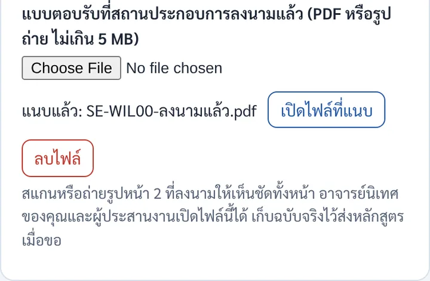
แนบแล้วจะขึ้นชื่อไฟล์
ใช้หนังสือแนะนำไปสมัคร แล้วให้บริษัทตอบรับ
- 1
พิมพ์ SE-WIL00 ฉบับเปล่าที่มีชื่อของคุณ
เข้าระบบที่ rmutl.link/sewil แท็บ ข้อมูลที่ฝึกและข้อตกลง กดปุ่ม เตรียมฉบับเปล่าที่มีชื่อของฉัน หน้า 1 จะมีชื่อคุณอยู่ในหนังสือแนะนำ ส่วนหน้า 2 เป็นแบบตอบรับเปล่าให้บริษัทกรอก
ถ้ายังเข้าระบบไม่ได้ ใช้ฉบับเปล่าไม่มีชื่อแล้วเขียนชื่อเองได้
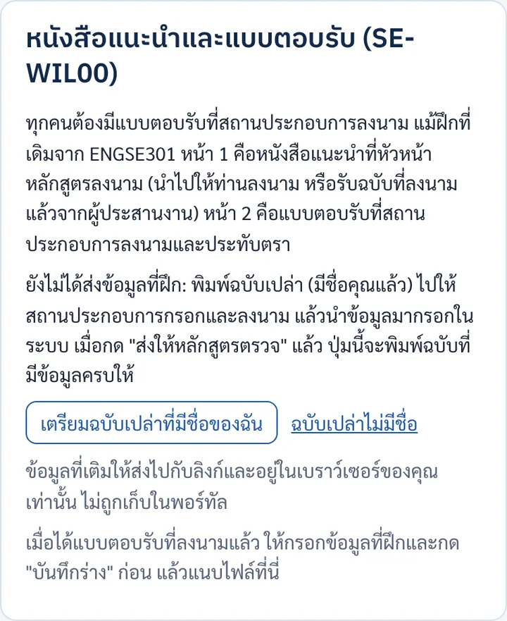
ก่อนส่งข้อมูล ปุ่มจะเป็น "เตรียมฉบับเปล่าที่มีชื่อของฉัน" 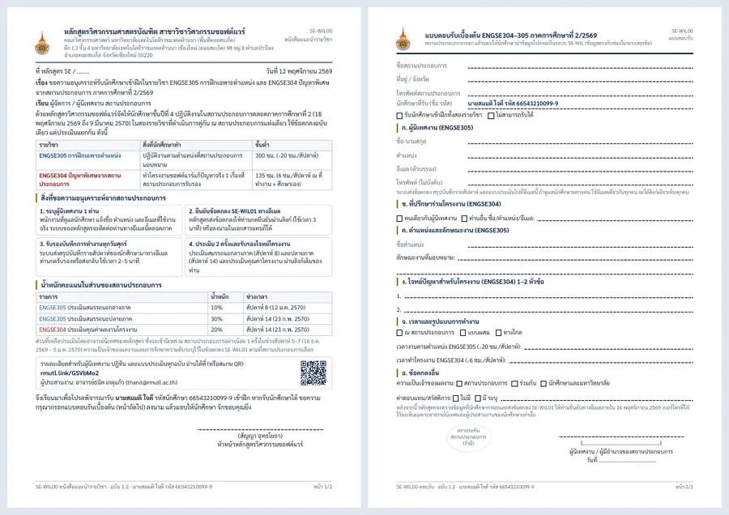
หน้า 1 มีชื่อคุณ · หน้า 2 ว่างให้บริษัทกรอก - 2
ให้หัวหน้าหลักสูตรลงนามหน้า 1 ก่อน
นำหน้า 1 ไปให้หัวหน้าหลักสูตรลงนาม (บนกระดาษหรือใน PDF) หนังสือนี้ยืนยันอย่างเป็นทางการว่าคุณเป็นนักศึกษาของหลักสูตรที่ขอเข้าฝึก และอธิบายรายวิชา ภาระของบริษัท และน้ำหนักคะแนนไว้ครบ
- 3
นำไปประกอบการสมัครหรือการสัมภาษณ์
แนบหนังสือที่ลงนามแล้วไปกับใบสมัครหรือ CV และนำหน้า 2 ไปด้วย บริษัทจะได้รู้ว่าต้องทำอะไรบ้าง และอ่านรายละเอียดต่อได้จากลิงก์และ QR ในหนังสือ
บริษัทไม่รับ
หาบริษัทใหม่แล้วเริ่มขั้นที่ 1 อีกครั้ง ถ้าใกล้กำหนดส่งแล้วยังไม่มีที่ฝึก แจ้งผู้ประสานงานทันที
- 4
บริษัทตอบรับ: กรอกหน้า 2 ลงนาม และประทับตรา
เมื่อบริษัทยินดีรับ ขอให้ผู้นิเทศงานเขียนข้อมูลในหน้า 2 ให้ครบด้วยตัวบรรจง (โดยเฉพาะอีเมล) ลงนาม และประทับตรา (ถ้ามี) ช่องในหน้า 2 ตรงกับช่องในระบบทุกข้อ คุณจึงนำไปกรอกต่อได้ทันที
- 5
สแกนหรือถ่ายรูปเอกสารที่ลงนามแล้ว
รวมทั้ง 2 หน้าเป็น PDF ไฟล์เดียว (หรือถ่ายรูปให้เห็นชัดทั้งหน้า) ไม่เกิน 5 MB เก็บฉบับจริงไว้ ส่งหลักสูตรเมื่อขอ
- 6
กรอกข้อมูลตามหน้า 2 แนบไฟล์ แล้วกด "ส่งให้หลักสูตรตรวจ"
- กรอกข้อมูลที่ฝึกตามที่บริษัทเขียนในหน้า 2 แล้วกด บันทึกร่าง ก่อน (ต้องบันทึกร่างก่อน ช่องแนบไฟล์จึงจะใช้ได้)
- แนบไฟล์ที่ช่อง แบบตอบรับที่สถานประกอบการลงนามแล้ว
- ติ๊กยินยอมท้ายฟอร์ม กด ส่งให้หลักสูตรตรวจ และ ยืนยันส่ง
หลังทำขั้นนี้ สถานะเป็น รอหลักสูตรตรวจแนบไฟล์ที่ลงนามแล้ว แล้วกด "ส่งให้หลักสูตรตรวจ" - 7
อาจารย์อ่านข้อมูลและตรวจสอบบริษัท
อาจารย์ตรวจข้อมูลในระบบเทียบกับแบบตอบรับที่แนบ ถ้าถูกต้องจะอนุมัติต่อทันที
อาจารย์ส่งกลับให้แก้ไข
คุณจะได้อีเมลแจ้ง และสถานะเป็น ส่งกลับให้แก้ไข พร้อมเหตุผล แก้แล้วกด "ส่งให้หลักสูตรตรวจ" อีกครั้ง
สถานะระหว่างรออาจารย์ตรวจ
ข้อตกลงการฝึก SE-WIL01 (เหมือนกันทั้งสองกรณี)
- 8
หลักสูตรอนุมัติ แล้วระบบส่งข้อตกลง SE-WIL01 ทางอีเมล
เมื่ออนุมัติ ระบบสร้างข้อตกลงการฝึก SE-WIL01 (มีเลขที่ เช่น SE-WIL01/2569-002) เป็นไฟล์ PDF แล้วส่งอีเมลพร้อมไฟล์แนบทันทีถึง ผู้นิเทศงาน และ คุณ
- อีเมลถึงผู้นิเทศงานมีปุ่ม ตรวจและยืนยันข้อตกลง (ลิงก์เฉพาะท่าน)
- อีเมลถึงคุณเป็นสำเนา และบอกว่าบันทึก logbook ในระบบได้แล้ว
หลังขั้นนี้ สถานะเป็น รอสถานประกอบการยืนยันผู้นิเทศงานบอกว่าไม่ได้รับอีเมล
ให้ท่านดูโฟลเดอร์ Junk หรือ Spam อีเมลมาจาก "ระบบ SE-WIL" ถ้ายังไม่พบ แจ้งผู้ประสานงานให้ส่งอีเมลข้อตกลงซ้ำ และตรวจว่ากรอกอีเมลของท่านถูกต้อง
[SE-WIL] ข้อตกลง SE-WIL01/2569-002 ถูกส่งให้สถานประกอบการแล้วจาก ระบบ SE-WIL · ถึง นายสมมติ ใจดีหลักสูตรอนุมัติข้อมูลที่ฝึกของคุณแล้ว และส่งข้อตกลงเลขที่ SE-WIL01/2569-002 ให้ผู้นิเทศงาน (นางสาวตัวอย่าง ผู้นิเทศ) ยืนยัน สำเนาข้อตกลงแนบมากับอีเมลนี้
ตั้งแต่วันนี้คุณบันทึก logbook ในระบบได้แล้ว
เปิดระบบ SE-WILPDFSE-WIL01-2569-002 นายสมมติ ใจดี.pdf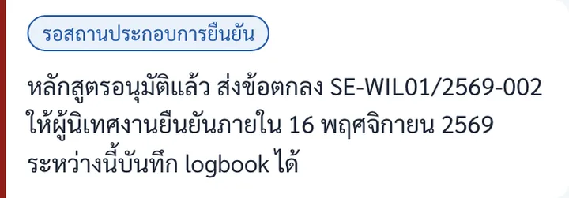
สถานะในระบบของคุณ - 9
ลงนามข้อตกลง SE-WIL01 ให้ครบทุกฝ่าย และเก็บสำเนาไว้ทุกคน
- ผู้นิเทศงาน ตรวจข้อตกลงที่แนบมา แล้วกดยืนยันผ่านลิงก์ในอีเมล (ใช้เวลาราว 3 นาที) หรือลงนามในเอกสาร
- ทุกฝ่าย ลงนามในช่องการยืนยันท้ายข้อตกลง ได้แก่ ผู้แทนสถานประกอบการ นักศึกษา และหัวหน้าหลักสูตร แล้วทำสำเนาเก็บไว้ทุกคน
- ส่งฉบับที่ลงนามครบให้ผู้ประสานงาน (ไฟล์ PDF หรือฉบับจริง)
คุณมีหน้าที่ประสานให้ครบทุกฝ่าย บอกผู้นิเทศงานล่วงหน้าว่าจะมีอีเมลจาก "ระบบ SE-WIL" มาถึง
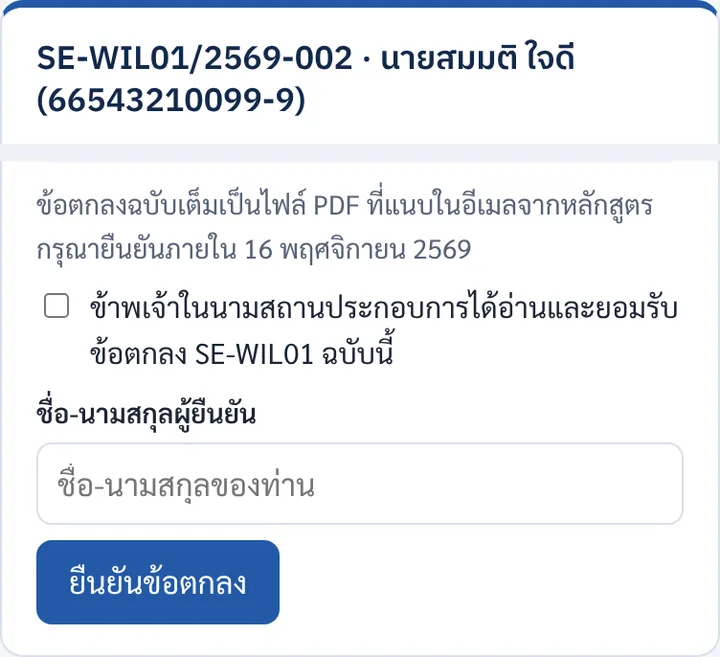
หน้าที่ผู้นิเทศงานเห็นเมื่อกดลิงก์ในอีเมล - 10
หลักสูตรบันทึกว่าลงนามแล้ว สถานะเป็น "ยืนยันแล้ว"
ถ้าผู้นิเทศงานกดยืนยันในอีเมล สถานะจะเปลี่ยนเอง ถ้าลงนามในเอกสาร ผู้ประสานงานจะบันทึกในระบบให้หลังได้รับฉบับที่ลงนามครบ
สถานะสุดท้าย ยืนยันแล้ว พร้อมเริ่มฝึก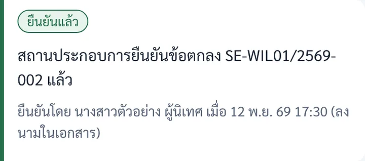
สถานะเมื่อข้อตกลงครบ - 11
เปิดภาค รายงานตัวที่บริษัท และเริ่มบันทึก logbook
เริ่มงานตามตารางที่ตกลงไว้ และบันทึก logbook ในระบบทุกวันทำงาน แท็กเป็น 305 (งานตามตำแหน่ง) หรือ 304 (งานโครงงาน) ทุกรายการ ทุกวันศุกร์ระบบจะส่งสรุปให้ผู้นิเทศงานรับรอง
3. สรุป: ต้องส่งอะไร เมื่อไร
| เอกสาร / งาน | ใครทำหรือลงนาม | ภายใน | ส่งทางไหน |
|---|---|---|---|
| ข้อมูลที่ฝึก | นักศึกษา | วันศุกร์ที่ 13 พฤศจิกายน 2569 | ระบบ SE-WIL ปุ่ม "ส่งให้หลักสูตรตรวจ" |
| SE-WIL00 หน้า 1 หนังสือแนะนำ | หัวหน้าหลักสูตรลงนาม | ก่อนนำไปให้บริษัท | กระดาษ หรือ PDF |
| SE-WIL00 หน้า 2 แบบตอบรับ | สถานประกอบการลงนาม (ประทับตราถ้ามี) | วันจันทร์ที่ 16 พฤศจิกายน 2569 | แนบไฟล์ในระบบ SE-WIL เก็บฉบับจริงไว้ |
| ข้อตกลง SE-WIL01 | ผู้นิเทศงาน นักศึกษา และหัวหน้าหลักสูตร | วันจันทร์ที่ 16 พฤศจิกายน 2569 | ผู้นิเทศงานยืนยันผ่านลิงก์ในอีเมล และลงนามในเอกสาร เก็บสำเนาทุกคน |
| รายงานตัวและเริ่ม logbook | นักศึกษา | วันพุธที่ 18 พฤศจิกายน 2569 | ที่บริษัท และระบบ SE-WIL แท็บ Logbook |
4. ถ้าเกิดกรณีเหล่านี้
ข้อมูลในแบบตอบรับที่พิมพ์ออกมาไม่ถูกต้อง
ให้บริษัทแก้ด้วยปากกาและลงนามกำกับได้เลย แล้วแจ้งผู้ประสานงาน อาจารย์จะส่งข้อมูลในระบบกลับให้คุณแก้ให้ตรงกัน
ส่งข้อมูลไปแล้ว แต่อยากแก้
หลังกดส่ง คุณแก้เองไม่ได้ แจ้งผู้ประสานงานให้ส่งกลับ แล้วแก้และส่งใหม่ (เบอร์มือถือของคุณแก้เองได้ตลอด)
ต้องเปลี่ยนที่ฝึกหลังอนุมัติแล้ว
แจ้งผู้ประสานงานก่อนทุกครั้ง อย่าเริ่มงานที่ใหม่เอง หลักสูตรจะแนะนำขั้นตอนต่อ
ผู้นิเทศงานยังไม่ยืนยันข้อตกลง ใกล้ถึงกำหนดแล้ว
เตือนท่านให้เปิดอีเมลจาก "ระบบ SE-WIL" แล้วกด "ตรวจและยืนยันข้อตกลง" หรือนำข้อตกลงไปให้ลงนามในเอกสาร ถ้าท่านไม่ได้รับอีเมล แจ้งผู้ประสานงานให้ส่งซ้ำ
ไม่แน่ใจว่าตอนนี้ต้องทำอะไรต่อ
เข้าระบบ SE-WIL แล้วดูกล่อง "สิ่งที่ต้องทำ" บนสุด ระบบจะบอกงานถัดไปพร้อมกำหนดส่งเสมอ ถ้ายังไม่ชัด ถามผู้ประสานงานในกลุ่มสื่อสารรายวิชา